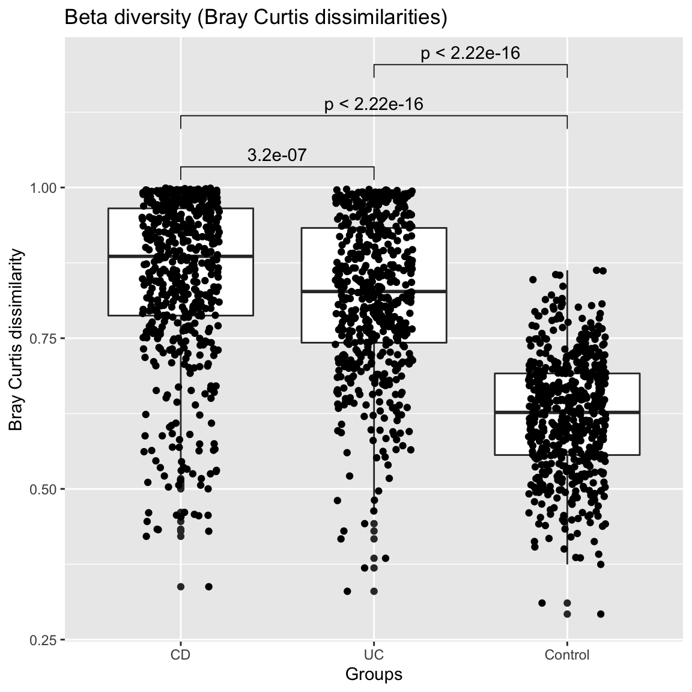
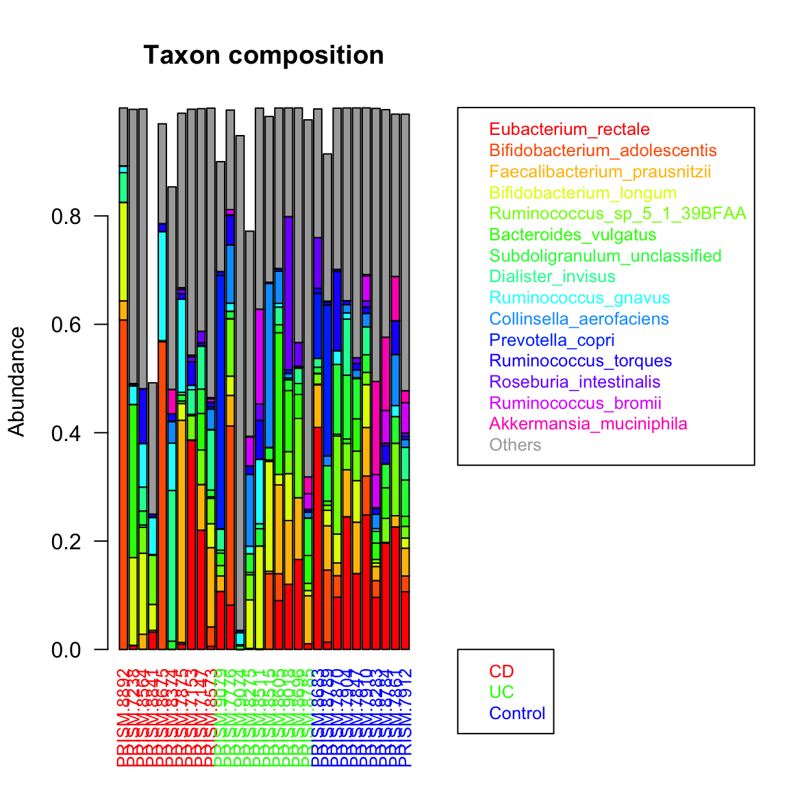
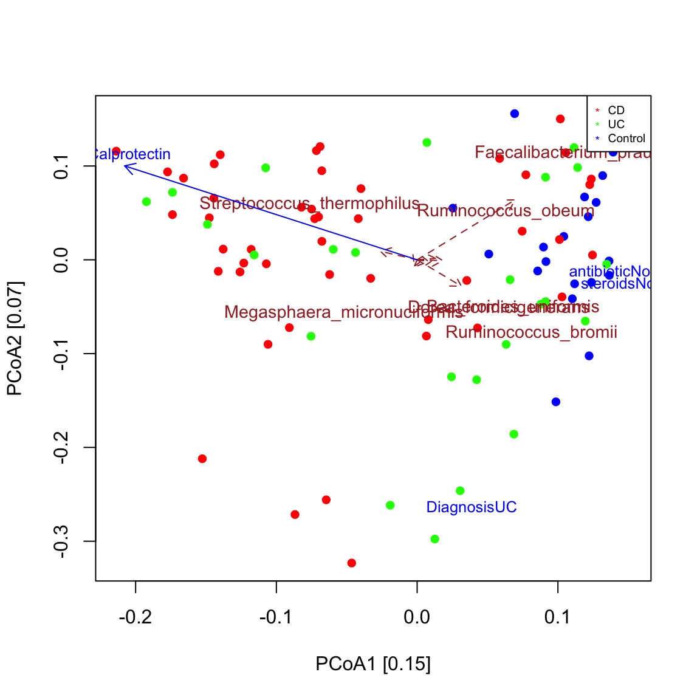
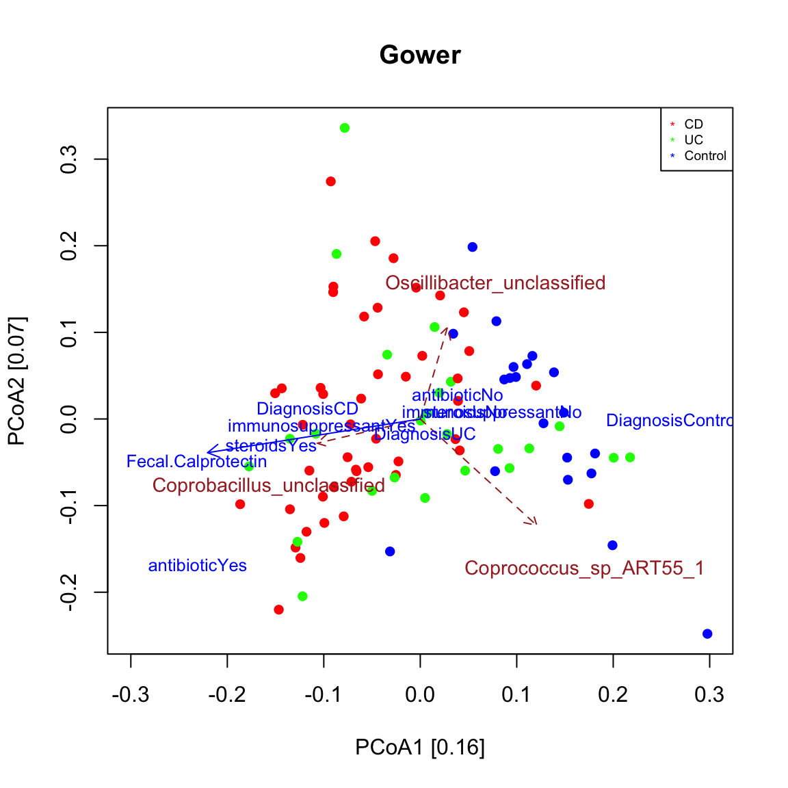

seqgroup tour
Karoline Faust
2019-09-07
seqgroup_tour.RmdBackground on the example data
The example data in this tutorial are taken from an IBD study carried out by Franzosa et al. https://www.nature.com/articles/s41564-018-0306-4. In this study, faecal samples from the PRISM cohort were sequenced and analysed. The PRISM cohort consists of 68 cases of Crohn’s disease (CD), 53 cases of ulcerative colitis (UC) and 34 controls, thus totalling 155 samples. Metagenomic shotgun sequencing was carried out. Relative abundances of species were estimated with species-specific marker genes using MetaPhlan2. Species below or equal to 0.1% abundance in at least five samples were excluded. CD and UC together are also referred to as inflammatory bowel disease (IBD).
Preparation of the analysis
We start by loading the seqgroup library.
library(seqgroup)Next, we load the taxon abundances, taxon lineages, and sample metadata from the PRISM cohort. Taxon abundances and metadata have matching sample identifiers, thus the status of a sample can be looked up in the metadata table. We summarise the metadata using the summary command. This command also tells us that some metadata information are missing, for instance there are 62 missing values (NA) for fecal calprotectin.
## SRA_metagenome_name Age Diagnosis Fecal.Calprotectin
## G35127 : 1 24 : 10 CD :68 2 : 5
## G35128 : 1 30 : 10 Control:34 231 : 3
## G35152 : 1 26 : 7 UC :53 32 : 3
## G36347 : 1 29 : 7 1 : 2
## G36348 : 1 31 : 7 12 : 2
## G36349 : 1 32 : 6 (Other):78
## (Other):149 (Other):108 NA's :62
## antibiotic immunosuppressant mesalamine steroids
## No :134 No :100 No :109 No :122
## Yes : 18 Yes: 55 Yes : 44 Yes : 31
## NA's: 3 NA's: 2 NA's: 2
##
##
##
## In this data set, we have three groups of interest: CD, UC and control. For future analyses, it is handy to have a vector with the group memberships ready. We can extract this vector from the metadata table.
groups=as.vector(ibd_metadata$Diagnosis)Exploration of diversity
The first question when exploring a data set of microbial abundances is often whether groups have significantly different alpha or beta diversity. Seqgroup offers the compareGroups function to compare alpha and beta diversity across groups. Alpha diversity is assessed with the Shannon index, whereas beta diversity can be assessed for instance by comparing the Bray Curtis dissimilarity distribution. The number of samples considered for each group is by default equalised by randomly subsampling groups to the smallest group. Here, the alpha diversity of the control group is significantly higher while its beta diversity is significantly lower compared to the two IBD groups according to the unpaired Wilcoxon test. Function stat_compare_means from the R package ggpubr is used to plot the p-value on top of the distributions.
compareGroups(ibd_taxa,groups=groups,property="alpha",pvalViz = TRUE)## [1] "Constraining sample number randomly to the same minimal group sample number of 34"
## [1] "Processing group CD"
## [1] "Processing group UC"
## [1] "Processing group Control"
## [1] "Number of significant differences in property alpha across groups: 2"
compareGroups(ibd_taxa,groups=groups,property="beta",pvalViz = TRUE)## [1] "Constraining sample number randomly to the same minimal group sample number of 34"
## [1] "Processing group CD"
## [1] "Processing group UC"
## [1] "Processing group Control"
## [1] "Number of significant differences in property beta across groups: 3"
The assessment of significance of a difference in beta diversity using the Bray Curtis distribution is problematic, since the number of all possible sample pairs is so large that even small differences become significant. Alternatively, we can assess beta diversity by fitting the Dirichlet-Multinomial to group-specific sample sets and compare the overdispersion parameter theta. In this case, the overdisperson supports the results obtained by comparing the Bray-Curtis distribution.
compareGroups(ibd_taxa,groups=groups,property="beta",method="DM")## [1] "Abundances have been scaled with factor: 10000"
## [1] "Constraining sample number randomly to the same minimal group sample number of 34"
## [1] "Processing group CD"
## [1] "Processing group UC"
## [1] "Processing group Control"
## NULL
Taxon composition
Taxon composition is conveniently visualised by sorting taxa by abundance, for instance by their sum across samples, and then displaying only the top 10 or 15 taxa. We can do this for a single group. In the bar plot below, we can see that despite representing relative abundances, samples do not sum to one, because of the filtering step mentioned above.
control.indices=which(groups=="Control")
groupBarplot(ibd_taxa[,control.indices],topTaxa = 15,legend.shift = 1.5, main="Control")We can display the same randomly selected number of samples for the three groups. However, the taxa are now ranked by their sum across all samples, instead of being ranked per group.
groupBarplot(ibd_taxa,topTaxa = 15,groups=groups, randSampleNum = 10, legend.shift = 1.5, main="Taxon composition")## [1] "Number of samples in group CD : 68"
## [1] "Number of samples in group UC : 53"
## [1] "Number of samples in group Control : 34"
We can obtain a group-specific ranking and preserve the color code using extendTaxonColorMap. This illustrates that IBD samples have different top-abundant taxa than control samples do.
ibd.indices=c(which(groups=="UC"),which(groups=="CD"))
par(mfrow=c(2,1))
taxon.color.map=groupBarplot(ibd_taxa[,control.indices],topTaxa = 7, randSampleNum = 20, extendTaxonColorMap = TRUE, main="Control")## [1] "Number of samples in group all : 34"taxon.color.map=groupBarplot(ibd_taxa[,ibd.indices],topTaxa = 7, randSampleNum = 20, taxon.color.map = taxon.color.map, extendTaxonColorMap = TRUE, main="IBD")## [1] "Number of samples in group all : 121"
We can also obtain a complementary view on the taxon composition with phyloseq, which is supported by seqgroup.
library(phyloseq)
prism.obj=toPhyloseq(ibd_taxa,metadata=ibd_metadata,lineages=ibd_lineages)
p = plot_bar(prism.obj, "Order", fill="Order", facet_grid=~Diagnosis) + geom_bar(aes(color=Order, fill=Order), stat="identity", position="stack")
p
Ordination
To check whether samples group by community composition, an ordination is frequently carried out. In seqgroup, vegan’s ordination functions are used to do bi- and triplots.
A biplot is a plot that shows both samples and taxa in the same ordination. The function seqPCoA displays significantly co-varying taxa among the selected number of taxa having the strongest covariance. The resulting plot shows that control samples are grouped separately from most IBD samples as seen in Figure 1c in Franzosa et al. https://www.nature.com/articles/s41564-018-0306-4. Bray-Curtis is robust to co-absences, which bias other measures of dissimilarity/distance. This can be tested by applying a prevalence filter and repeating the plot. The sample groups are preserved, however the strongly covarying taxa are altered, since the prevalence filter removes taxa.
seqPCoA(ibd_taxa,groups=groups, topTaxa=30)
## [1] "Among the top 30 covarying taxa, 2 are significant."# prevalence filter
prev=50 # minimum occurrence in 50 samples
ibd_taxa_incidence=ibd_taxa
ibd_taxa_incidence[ibd_taxa_incidence>0]=1
rowSums=rowSums(ibd_taxa_incidence)
indices.prev=which(rowSums>=prev)
seqPCoA(ibd_taxa[indices.prev,], groups=groups, topTaxa=30)
## [1] "Among the top 30 covarying taxa, 3 are significant."In a triplot, covarying metadata are plotted in addition. Seqgroup wraps vegan’s envfit function to do so, which does not accept missing values. In addition, envfit needs to know whether to treat metadata as numeric or categoric. By default, they are all categoric, even age, which is better treated as numeric here. Thus, before carrying out a triplot with seqPCoA, we need to assign the correct data categories and remove metadata and/or samples with missing values. The ordination then shows that calprotectin values covary strongly and significantly with the community composition of IBD samples.
# assign numeric metadata types, metadata with only 2 values are treated automatically as categoric (binary).
ibd_metadata=assignMetadataTypes(ibd_metadata,categoric=c("SRA_metagenome_name","Diagnosis"))## [1] "Metadata SRA_metagenome_name is categoric"
## [1] "Metadata Age is numeric"
## [1] "Metadata Diagnosis is categoric"
## [1] "Metadata Fecal.Calprotectin is numeric"
## [1] "Metadata antibiotic is binary"
## [1] "Metadata immunosuppressant is binary"
## [1] "Metadata mesalamine is binary"
## [1] "Metadata steroids is binary"# remove 65 samples with missing calprotectin measurements or other missing values in the metadata
na.indices=unique(which(is.na(ibd_metadata),arr.ind=TRUE)[,1])
indices.to.keep=setdiff(1:nrow(ibd_metadata),na.indices)
ibd_metadata.nafree=ibd_metadata[indices.to.keep,]
ibd_taxa.nafree=ibd_taxa[,indices.to.keep]
seqPCoA(ibd_taxa.nafree,metadata=ibd_metadata.nafree,groups=groups[indices.to.keep],topTaxa=60)## [1] "1 significant numeric metadata found, in order of significance:"
## [1] "Fecal.Calprotectin"
## [1] "4 significant categoric metadata found, in order of significance:"
## [1] "Diagnosis"
## [1] "antibiotic"
## [1] "immunosuppressant"
## [1] "steroids"
## [1] "Among the top 60 covarying taxa, 6 are significant."The same result is also supported by the Gower distance.
seqPCoA(ibd_taxa.nafree,metadata=ibd_metadata.nafree,groups=groups[indices.to.keep],topTaxa=60, dis="gower",xlim=c(-0.3,0.3),main="Gower")## [1] "1 significant numeric metadata found, in order of significance:"
## [1] "Fecal.Calprotectin"
## [1] "4 significant categoric metadata found, in order of significance:"
## [1] "Diagnosis"
## [1] "antibiotic"
## [1] "immunosuppressant"
## [1] "steroids"
## [1] "Among the top 60 covarying taxa, 3 are significant."Faecalibacterium prausnitzii was found to significantly covary with community composition in the reduced missing-value free data set. We can compare its distribution in IBD and control samples. In this case, there is indeed a significant difference: the abundance of F. prausnitzii is reduced in IBD samples (high density at low abundance). Here, only a single taxon is compared across two groups, but a systematic comparison of taxon abundances across groups would require a multiple testing correction. ALDEx2 https://www.bioconductor.org/packages/release/bioc/html/ALDEx2.html is a good tool for this task.
ibd.groups=groups[indices.to.keep]
ibd.groups[ibd.groups=="UC"]="IBD"
ibd.groups[ibd.groups=="CD"]="IBD"
taxon="Faecalibacterium_prausnitzii"
compareDistribs(ibd_taxa.nafree,taxon=taxon,groups=ibd.groups,group1="IBD",group2="Control")
Sample-wise clustering
We can check if unsupervised clustering uncovers the three groups we know. DMM clustering implemented in the DirichletMultinomial package is often used for sample-wise clustering of microbial abundances, though many alternatives exist. Here, we will use the Calinski Harabasz index implemented in the clusterCrit package to determine an optimal cluster number for DMM clustering. For this tutorial, we will test the quality of up to 6 clusters. The agreement of clusters with groups can then be inspected visually in an ordination.
clusters=findClusters(ibd_taxa,k=NA,maxK=6,qualityIndex = "CH")
seqPCoA(ibd_taxa,groups=groups,clusters=clusters, topTaxa=30)
The significance of the agreement between clusters and groups can be assessed for instance with a Chi^2 test.
clus.table = table(groups, clusters)
chisq.test(clus.table) ##
## Pearson's Chi-squared test
##
## data: clus.table
## X-squared = 37.212, df = 2, p-value = 8.31e-09